01
毎週のシャンプー時に撮影した記録
毎週シャンプーに来ていたワンちゃんの、おなかまわりを撮影した写真です。りふれシャワーで数回シャンプーした期間の記録です。
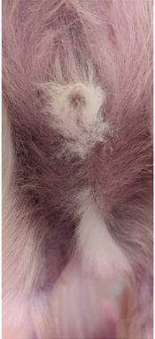
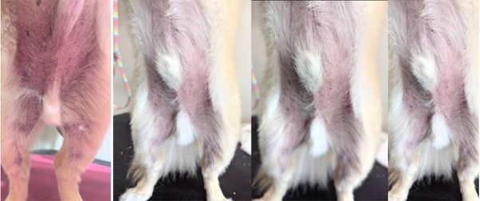
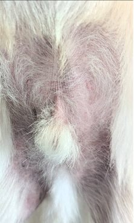
※実際の使用事例・お客様から寄せられた経過の紹介です。治療効果を保証するものではありません。
ワンちゃん・ネコちゃんの、毎日のお手入れと洗浄に。
トリミングサロンやご家庭で、実際に使われている方法です。
りふれシャワーで、ワンちゃんのシャンプー・洗浄に。
りふれウォーターをお耳に入れてから、ティッシュで拭き取るお手入れに。
毛にスプレーしてから、コーミング(ブラッシング)を。
歯みがきや、目まわりの汚れの拭き取りに。
粗相のあとの床などを拭き取ったあと、スプレーしてティッシュオフ。
ワンちゃん・ネコちゃんの飲み水として。
ペットと過ごす空間の、毎日の空間ケアにMOKO DAILY WATERを。
避難所や車中泊など、通常どおり洗うことが難しい犬・猫の拭き取りや部分洗浄などに活用できます。防災・災害時
トリミングサロンのお客様から寄せられた、使用の経過を記録した写真です。撮影した時期のみを記載しています。
毎週シャンプーに来ていたワンちゃんの、おなかまわりを撮影した写真です。りふれシャワーで数回シャンプーした期間の記録です。



※実際の使用事例・お客様から寄せられた経過の紹介です。治療効果を保証するものではありません。
お客様から提供された、使用前と4日後の写真です。
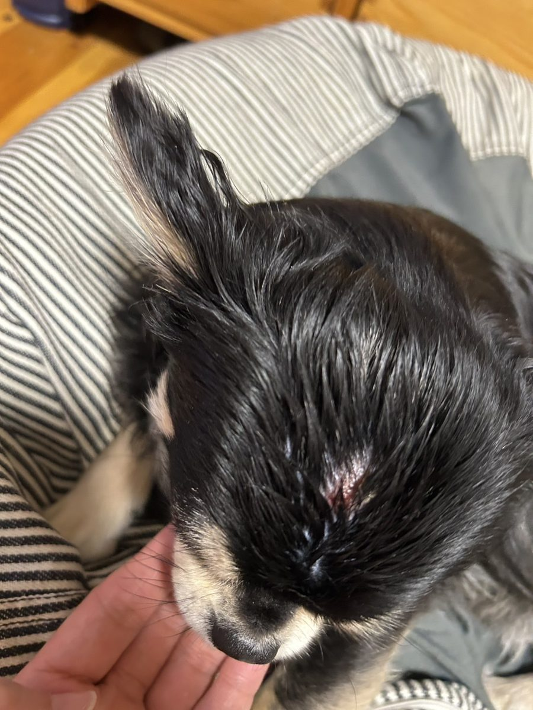
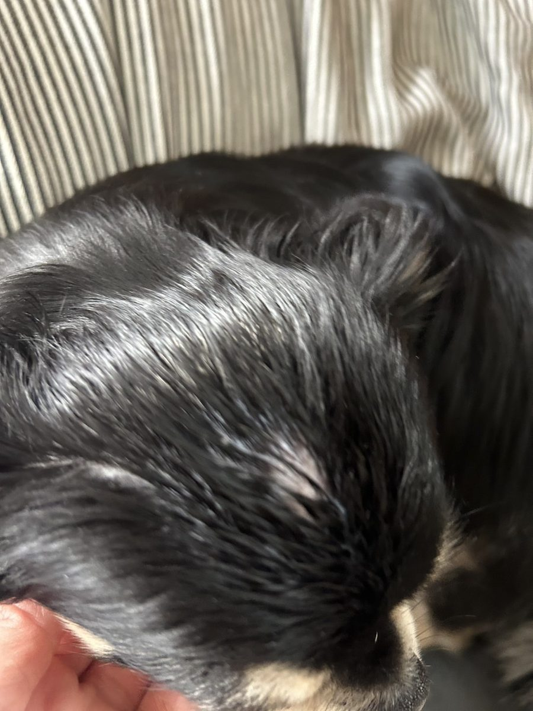
※傷や皮膚症状がある場合は、獣医師にご相談ください。
資料に掲載されている、使用前と1ヶ月後の写真です。
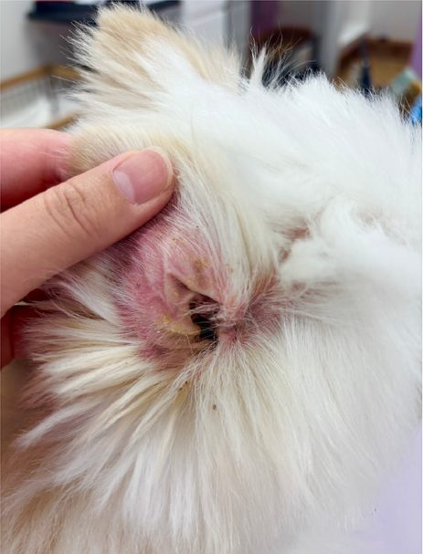
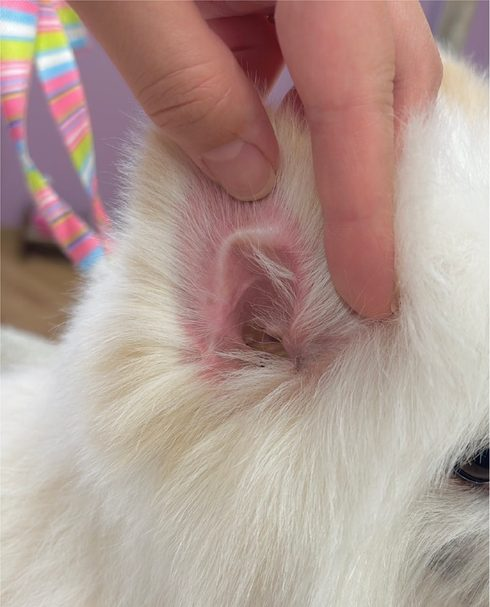
※資料に記録された使用事例の紹介です。治療を目的とするものではありません。
プードルの顎下・首まわりを撮影した、資料に掲載されている写真です。
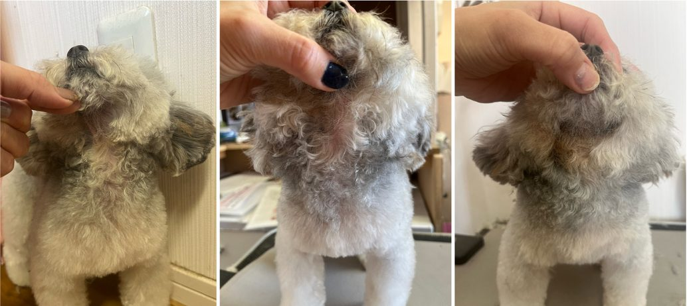
※実際の使用事例・お客様から寄せられた経過の紹介です。治療効果を保証するものではありません。
トリミングサロンやご家庭でお使いの方から寄せられた声と写真です。


昨日デモで洗ったわんちゃんの感想。それが……ふわふわが持続していて、たくさん撫でてるのに毛もよれないし、ずっと立ち上がったままで臭いが全くないです!
操作が楽!スイッチがフットスイッチだけというのがGOOD!
トリミング現場でのご利用(りふれシャワー)
垂れ耳のワンちゃん(狆・13歳)のお耳を、りふれウォーターとティッシュでお掃除しました。


お耳に入れてクチュクチュしてから、ティッシュで拭いたそうです。いつもなら綿棒を5本くらい使って時間もかかるのに、お水とティッシュだけでキレイになりました。短時間でササッと。匂いも全く無くて無臭です!
ご家庭でのご利用


スプレーしてコーミングしただけで伸びる。
トリミングでのご利用
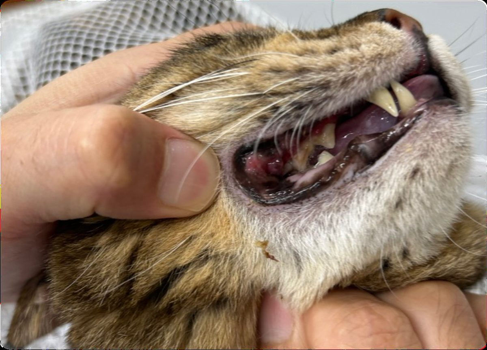
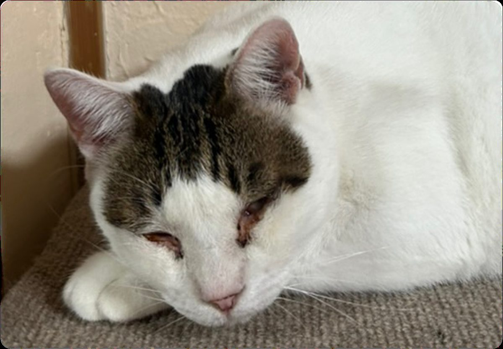
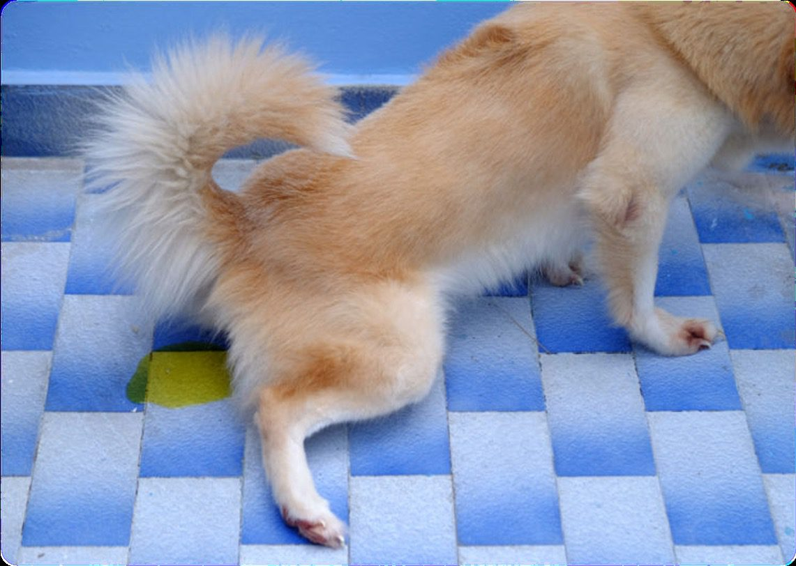
歯を磨いてみたら、ザラネバが取れスッキリ。
あの水でうちの猫の目ヤニのカリカリお目々を拭いたら、いつもより取れが早くて、お互いが楽でした。
床でワンちゃんがおしっこしたけど、拭き取った後スプレーしてティッシュオフしたら臭い消えた!
ご家庭でのご利用


4匹中、3匹は好んで飲んでくれています。帰ってお水出したら、速攻飲みにきました。
ご家庭でのご利用
※お客様の声は個人の感想です。ペットの状態・使用環境・使用方法などにより、感じ方や結果は異なります。